Introduction to h3jsr
Lauren O’Brien
2022-01-05
intro-to-h3jsr.Rmd
local_options <- options()
library(sf)
library(dplyr)
library(ggplot2)
library(h3jsr)
# for R < 4, since H3 addresses are handled as strings
options(stringsAsFactors = FALSE)General information
h3jsr connects Uber’s H3 geospatial library to R, via its transpiled JavaScript implementation,h3-js. The library has extensive potential applications in network analysis, trip routing, and geospatial data aggregation. The wrapper functions provided are intended to interface well with the existing R-spatial ecosystem, particularly sf.
- Documentation for the core H3 library is at H3’s github page.
- The core library only understands WGS84 coordinates, so multiple projection support is limited. All spatial objects are returned in WGS84, and ideally should be supplied as such. It’s always safer to do your own spatial transformations and verify the results. If spatial data in a coordinate system other than WGS84 is supplied, it is transformed using
sf::st_transform()and a message is issued. - For each function in
h3jsr, the default behaviour is to return data in as simple a structure as is practical, but there is always an option to return a more complex-object containing both input and output data, as appropriate for the function in question. - This package uses
V8to interface withh3-js. As such, a lot of the overhead for each function call is related to sending data to and from V8 via JSON conversion. Feeding large datasets in often gives faster results than one might expect from the toy examples below. Avoid using these functions in conjunction with e.g.base::lapplyorpurrr::mapon individual geometries!
Core Functions
Nine core functions exist - three for translating spatial data into and out of the H3 system, and six information utilities, including an address validity checker.
point_to_h3() takes in sf-style point data and will return the address each point falls into. You can extract addresses for one resolution or many. This function will also accept a matrix or data frame as input, but this will only work if columns 1 and 2 contain WGS84 longitude and latitude values, respectively.
# This is the location of the Brisbane Town Hall:
bth <- sf::st_sfc(sf::st_point(c(153.023503, -27.468920)), crs = 4326)
# where is the Brisbane Town Hall at resolution 15?
point_to_h3(bth, res = 15)
#> [1] "8fbe8d12acad2f3"By default, a character vector is returned for a single resolution, and a data frame where multiple resolutions are requested. If simple = FALSE and the input object inherits from data.frame, a data frame object is returned with a new attribute column for each resolution requested.
nc <- st_read(system.file("shape/nc.shp", package="sf"), quiet = TRUE)
nc_pts <- st_centroid(nc)
nc_pts <- st_transform(nc_pts, crs = 4326)
nc_pts <- dplyr::select(nc_pts, CNTY_ID, NAME)
# Give me the address for the center of each NC county at every resolution
nc_all_res <- point_to_h3(nc_pts, res = seq(0, 15), simple = FALSE)
head(nc_all_res[, c(1:5)])
#> CNTY_ID NAME h3_resolution_0 h3_resolution_1 h3_resolution_2
#> 1 1825 Ashe 802bfffffffffff 812abffffffffff 8244dffffffffff
#> 2 1827 Alleghany 802bfffffffffff 812abffffffffff 8244dffffffffff
#> 3 1828 Surry 802bfffffffffff 812abffffffffff 822a8ffffffffff
#> 4 1831 Currituck 802bfffffffffff 812afffffffffff 822af7fffffffff
#> 5 1832 Northampton 802bfffffffffff 812afffffffffff 822af7fffffffff
#> 6 1833 Hertford 802bfffffffffff 812afffffffffff 822af7fffffffffH3 addresses can be translated back to a point at a given resolution with h3_to_point(). A polygon (almost always a hexagon), can be retrieved with h3_to_polygon().
# plot a few
ashe_hexes <- unlist(nc_all_res[1, c(6,7,8,9,10)], use.names = FALSE)
ashe_hexes <- h3_to_polygon(ashe_hexes, simple = FALSE)
ggplot(nc[1,]) +
geom_sf(fill = NA, colour = 'black') +
geom_sf(data = ashe_hexes, aes(fill = h3_address), alpha = 0.5) +
scale_fill_viridis_d() +
ggtitle('H3 hexagons over County Ashe, NC', subtitle = 'Resolutions 6-10') +
theme_minimal() +
coord_sf()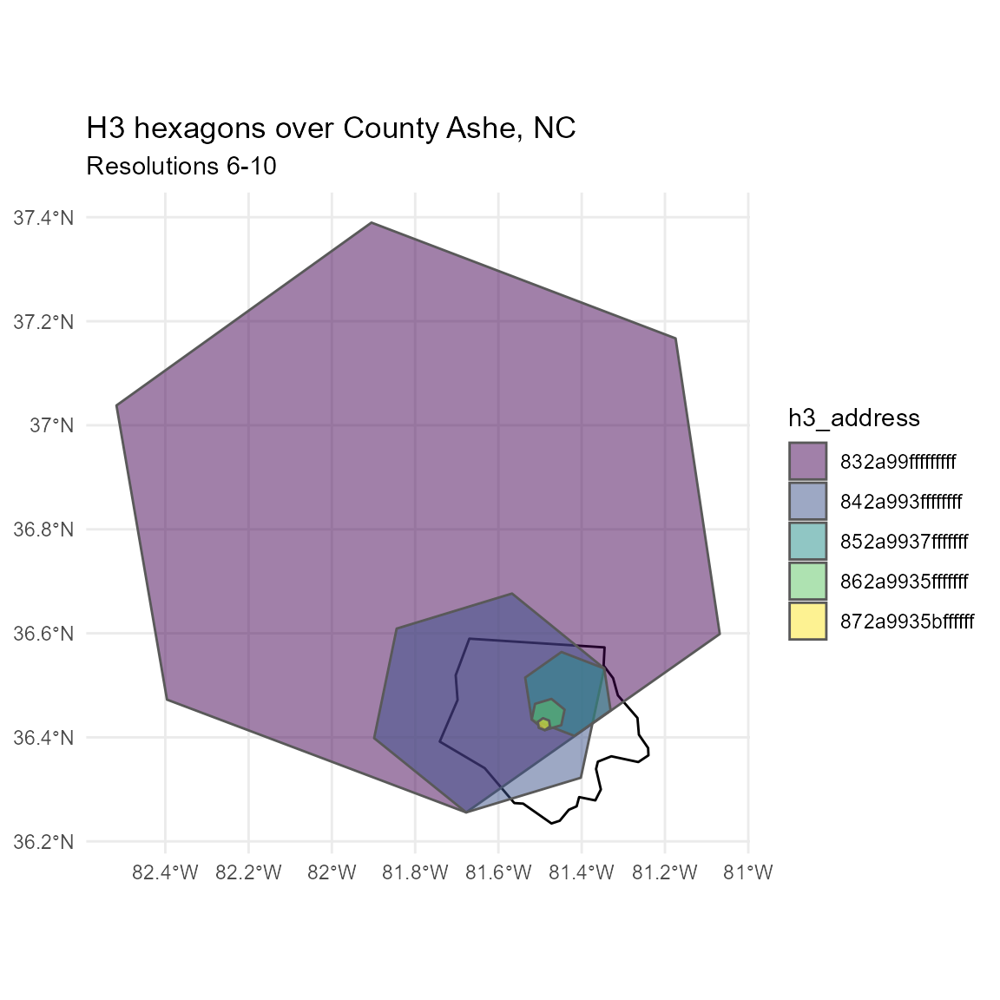
Hopefully the above plot gives a sense of the large scale changes between resolution levels - each level is seven times more detailed than the last.
H3 address validity checks are done with is_valid():
is_valid(h3_address = '8abe8d12acaffff')
#> [1] TRUE
is_valid(h3_address = '8abe8d12aca')
#> [1] FALSEYou can check whether an address refers to one of the pentagons that occur on icosahedron corners at each resolution with is_pentagon(). This is relevant where subsequent area or distance calculations will be carried out. All of the pentagon indices for a given resolution can be identified using get_pentagons().
# is the following address a pentagon?
is_pentagon(h3_address = '8abe8d12acaffff')
#> [1] FALSE
get_pentagons(res = 8)
#> [[1]]
#> [1] "8808000001fffff" "881c000001fffff" "8830000001fffff" "884c000001fffff"
#> [5] "8862000001fffff" "8874000001fffff" "887e000001fffff" "8890000001fffff"
#> [9] "88a6000001fffff" "88c2000001fffff" "88d6000001fffff" "88ea000001fffff"
ggplot() +
geom_sf(data = h3_to_polygon(get_pentagons(8)[[1]][1]), fill = NA) +
theme_void()
is_rc3() checks whether an H3 address has a resolution with Class III orientation. This refers to the orientation of the hex grid relative to the next coarser resolution.
is_rc3(h3_address = '8abe8d12acaffff')
#> [1] FALSEThe number of the base (resolution-0) cell for any H3 address can be retrieved with get_base_cell(). These run from 0 at the North Pole to 121 at the South.
get_base_cell(h3_address = '8abe8d12acaffff')
#> [1] 95The triangular icosahedron face (or faces) that a cell belongs to can also be retrieved with get_faces(). These run 1-20, North to South.
get_faces(h3_address = '8abe8d12acaffff')
#> [1] 15Lastly, the resolution of an H3 address can be retrieved with get_res().
get_res(h3_address = '8abe8d12acaffff')
#> [1] 10Neighbour Algorithms
As the H3 grid system is hierarchical, addresses have parents and children. A parent address is the one that contains the given address at a coarser resolution. A child address is contained by the given address. Parents and children can be requested at any resolution above and below the input, respectively.
# input is res 10:
get_parent(h3_address = '8abe8d12acaffff', res = 6)
#> [1] "86be8d12fffffff"
# input is res 6:
get_children(h3_address = '86be8d12fffffff', res = 7)
#> [[1]]
#> [1] "87be8d128ffffff" "87be8d129ffffff" "87be8d12affffff" "87be8d12bffffff"
#> [5] "87be8d12cffffff" "87be8d12dffffff" "87be8d12effffff"
ggplot() +
geom_sf(data = h3_to_polygon('86be8d12fffffff'), fill = NA) +
geom_sf(data = h3_to_polygon(get_children(h3_address = '86be8d12fffffff',
res = 7)[[1]]),
fill = 'red', alpha = 0.5 ) +
theme_void()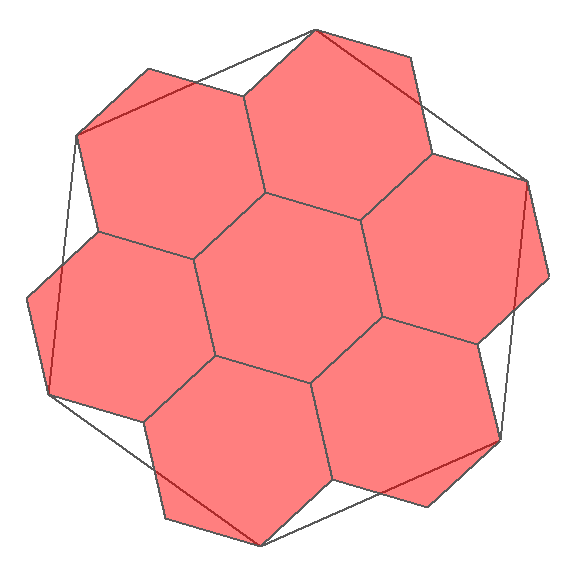
The number of addresses returned for each request is 7 ^ (parent_res - child_res), so jumping three levels will return 343 addresses for a single input, and that’s about 41 kb.
To return only the central child for a given address, use get_centerchild():
# input is res 6:
get_centerchild(h3_address = '86be8d12fffffff', res = 7)
#> [1] "87be8d128ffffff"
ggplot() +
geom_sf(data = h3_to_polygon('86be8d12fffffff'), fill = NA) +
geom_sf(data = h3_to_polygon(get_centerchild('86be8d12fffffff', 7)),
fill = 'red') +
geom_sf(data = h3_to_polygon(get_centerchild('86be8d12fffffff', 8)),
fill = 'blue') +
theme_void()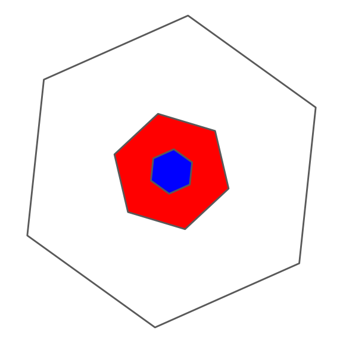
Within the same resolution, addresses within n ‘steps’ from a central address (a ‘patch’ of hexagons) can be retrieved with get_kring() or get_kring_list(). The latter function returns an output where addresses are listed separately for each step away from the input. The input address is included in the output.
get_kring(h3_address = '86be8d12fffffff', ring_size = 2)
#> [[1]]
#> [1] "86be8d12fffffff" "86be8d127ffffff" "86be8d107ffffff" "86be8d10fffffff"
#> [5] "86be8d177ffffff" "86be8d8dfffffff" "86be8d8d7ffffff" "86be8d88fffffff"
#> [9] "86be8d89fffffff" "86be8d137ffffff" "86be8d117ffffff" "86be8d11fffffff"
#> [13] "86be8d027ffffff" "86be8d157ffffff" "86be8d147ffffff" "86be8d167ffffff"
#> [17] "86be8d8cfffffff" "86be8d8c7ffffff" "86be8d8f7ffffff"
get_kring_list(h3_address = '86be8d12fffffff', ring_size = 2)
#> [[1]]
#> [[1]][[1]]
#> [1] "86be8d12fffffff"
#>
#> [[1]][[2]]
#> [1] "86be8d127ffffff" "86be8d107ffffff" "86be8d10fffffff" "86be8d177ffffff"
#> [5] "86be8d8dfffffff" "86be8d8d7ffffff"
#>
#> [[1]][[3]]
#> [1] "86be8d88fffffff" "86be8d89fffffff" "86be8d137ffffff" "86be8d117ffffff"
#> [5] "86be8d11fffffff" "86be8d027ffffff" "86be8d157ffffff" "86be8d147ffffff"
#> [9] "86be8d167ffffff" "86be8d8cfffffff" "86be8d8c7ffffff" "86be8d8f7ffffff"A ‘donut’ of addresses at exactly n steps is obtained with get_ring().
get_ring(h3_address = '86be8d12fffffff', ring_size = 2)
#> [[1]]
#> [1] "86be8d8f7ffffff" "86be8d88fffffff" "86be8d89fffffff" "86be8d137ffffff"
#> [5] "86be8d117ffffff" "86be8d11fffffff" "86be8d027ffffff" "86be8d157ffffff"
#> [9] "86be8d147ffffff" "86be8d167ffffff" "86be8d8cfffffff" "86be8d8c7ffffff"These address lists can all be spatialised with set_to_multipolygon(), which returns the polygonised outline of a collection of H3 addresses.
patch <- get_kring(h3_address = '86be8d12fffffff', ring_size = 2)
donut <- get_ring(h3_address = '86be8d12fffffff', ring_size = 5)
patch_sf <- set_to_multipolygon(patch, simple = FALSE)
donut_sf <- set_to_multipolygon(donut, simple = FALSE)
ggplot() +
geom_sf(data = patch_sf, alpha = 0.5) +
theme_minimal() +
geom_sf(data = donut_sf, alpha = 0.5, fill = 'red') +
theme_void()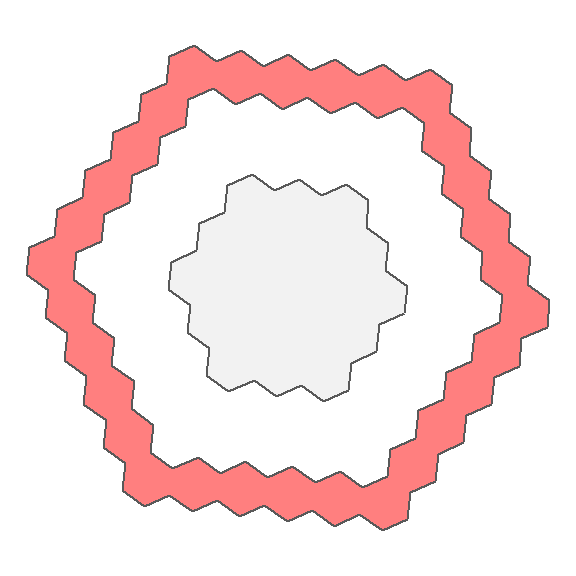
But it may be more interesting to use h3_to_polygon()
patch_singles <- h3_to_polygon(unlist(patch, use.names = FALSE), simple = FALSE)
donut_singles <- h3_to_polygon(unlist(donut, use.names = FALSE), simple = FALSE)
ggplot(patch_singles) +
geom_sf(aes(fill = 1:nrow(patch_singles)), show.legend = FALSE) +
scale_fill_viridis_c() +
theme_minimal() +
theme_void()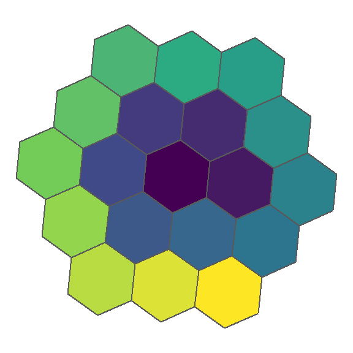
ggplot(donut_singles) +
geom_sf(aes(fill = 1:nrow(donut_singles)), show.legend = FALSE) +
scale_fill_viridis_c() +
theme_minimal() +
theme_void()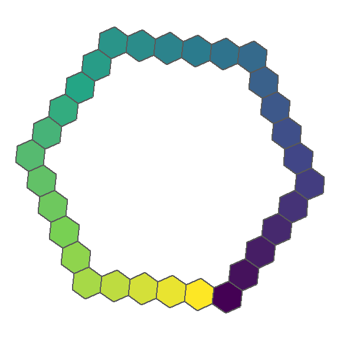
polyfill() will return all the h3 addresses whose centers intersect a given polygon. Multipolygons are supported as well.
ashe <- st_transform(nc[1, ], crs = 4326)
ashe_7 <- polyfill(ashe, res = 7, simple = FALSE)
ashe_7 <- h3_to_polygon(unlist(ashe_7$h3_polyfillers), simple = FALSE)
ggplot() +
geom_sf(data = ashe, fill = NA) +
geom_sf(data = ashe_7, fill = NA, colour = 'red') +
ggtitle('Resolution 7 hexagons', subtitle = 'County Ashe, NC') +
theme_minimal() +
coord_sf()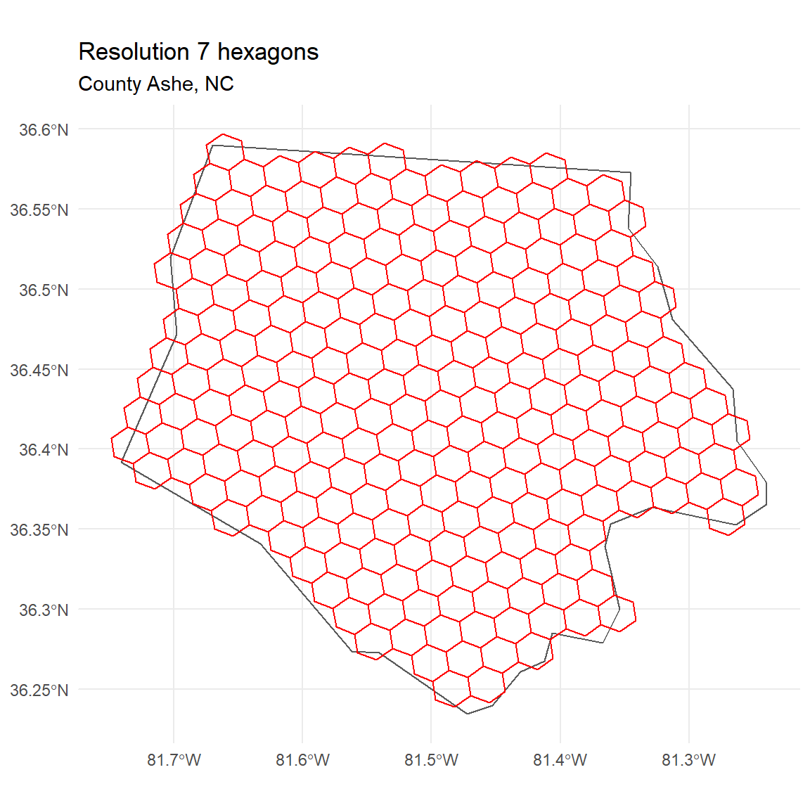
A representation like this can be ‘compacted’ with compact().
ashe_comp <- compact(ashe_7$h3_address)
ashe_comp <- h3_to_polygon(ashe_comp, simple = FALSE)
ggplot() +
geom_sf(data = ashe, fill = NA) +
geom_sf(data = ashe_comp, fill = NA, colour = 'red') +
ggtitle('Compacted hexes from resolution 7', subtitle = 'County Ashe, NC') +
theme_minimal() +
coord_sf()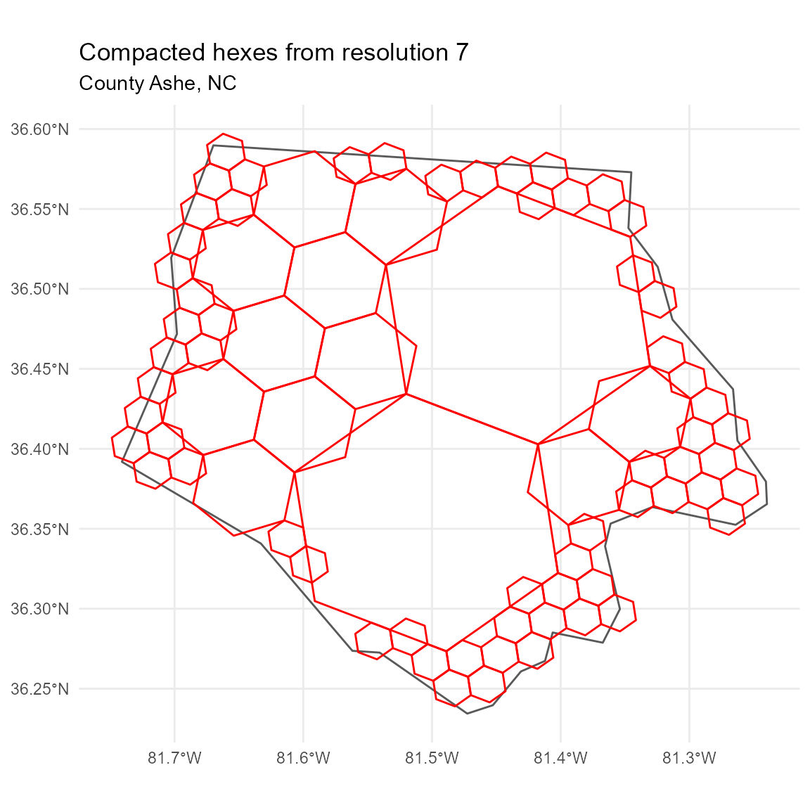
Note the orientation shift at each resolution change. A compacted representation can be uncompacted back to any resolution with uncompact(), with some loss when the chosen resolution is more detailed than the original polyfill() operation.
ashe_comp <- compact(ashe_7$h3_address)
ashe_uncomp <- uncompact(ashe_comp, res = 8)
ashe_uncomp <- h3_to_polygon(ashe_uncomp, simple = FALSE)
ggplot() +
geom_sf(data = ashe, fill = NA) +
geom_sf(data = ashe_uncomp, fill = NA, colour = 'red') +
theme_minimal() +
ggtitle('Uncompacted hexes to resolution 8', subtitle = 'County Ashe, NC') +
coord_sf()
Unidirectional edges
To check whether two H3 addresses share an edge, use are_neighbours():
# Are the following addresses neighbours?
are_neighbours(origin = '86be8d12fffffff', destination = '86be8d127ffffff')
#> [1] TRUE
are_neighbours(origin = '86be8d12fffffff', destination = '86be8d147ffffff')
#> [1] FALSE
ggplot() +
geom_sf(data = h3_to_polygon(c('86be8d12fffffff')),
fill = c('red'), alpha = 0.5) +
geom_sf(data = h3_to_polygon(c('86be8d127ffffff')),
fill = c('blue'), alpha = 0.5) +
geom_sf(data = h3_to_polygon(c('86be8d147ffffff')),
fill = c('green'), alpha = 0.5) +
theme_void()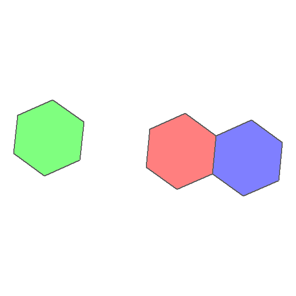
The H3 system can also generate addresses for hex edges. To get the address representing the edge between to adjacent H3 addresses, use get_udedge(). Note that the resultant address looks a little different, and has its own validity checking function, is_valid_edge():
# Get me the edge between these two addresses
get_udedge(origin = '86be8d12fffffff', destination = '86be8d127ffffff')
#> [1] "166be8d12fffffff"
is_valid_edge('166be8d12fffffff')
#> [1] TRUE
# not neighbours:
get_udedge(origin = '86be8d12fffffff', destination = '86be8d147ffffff')
#> [1] NAThe edge address can also be used to retrieve its origin and destination hex addresses, separately or together:
get_udorigin(h3_edge = '166be8d12fffffff')
#> [1] "86be8d12fffffff"
get_uddest(h3_edge = '166be8d12fffffff')
#> [1] "86be8d127ffffff"
get_udends(h3_edge = '166be8d12fffffff')
#> [[1]]
#> [1] "86be8d12fffffff" "86be8d127ffffff"To get all the edges of a given H3 address, use get_udedges(). Edges can be converted to sfc_LINESTRING geometries with udedge_to_line():
get_udedges(h3_address = '86be8d12fffffff')
#> [[1]]
#> [1] "116be8d12fffffff" "126be8d12fffffff" "136be8d12fffffff" "146be8d12fffffff"
#> [5] "156be8d12fffffff" "166be8d12fffffff"
ggplot() +
geom_sf(data = h3_to_polygon('86be8d12fffffff'), col = NA) +
geom_sf(data = udedge_to_line(get_udedges(h3_address = '86be8d12fffffff')[[1]]),
aes(col = seq(6)), size = 2, show.legend = FALSE) +
scale_color_viridis_c() +
theme_void()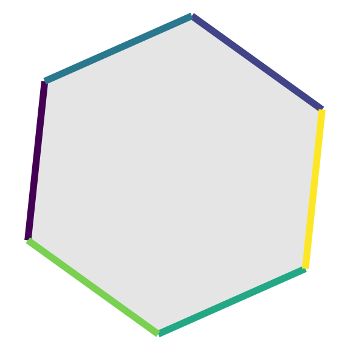
Local coordinates
Functions get_local_ij() and get_local_h3() can be used to map H3 addresses to a 2-axis coordinate space, relative to a given origin address. These functions are experimental and are likely to change in future.
local <- get_local_ij(origin = '86be8d12fffffff',
destination = '86be8d127ffffff')
get_local_h3(origin = '86be8d12fffffff', i = local[, 1], j = local[, 2])
#> [1] "86be8d127ffffff"Distance and Direction
Within the context of the H3 grid system, functions grid_distance() and grid_path() provide some ‘navigational’ functionality. grid_distance() will report how many steps through the grid are required to travel from one address to another. grid_path() will return a list of addresses that traverse a shortest path. Note that multiple minimum-step pathways will be possible for many sets of addresses, but this function should return the same one consistently.
nc_pts <- sf::st_centroid(nc[c(1, 2), ])
nc_6 <- point_to_h3(nc_pts, res = 6)
# how far apart are these two addresses?
grid_distance(nc_6[1], nc_6[2])
#> [1] 6
# find a path between these two addresses:
path <- grid_path(nc_6[1], nc_6[2], simple = TRUE)
path
#> [[1]]
#> [1] "862a9935fffffff" "862a9934fffffff" "862a9936fffffff" "8644db267ffffff"
#> [5] "8644db277ffffff" "8644db257ffffff" "8644db2e7ffffff"Note that these functions only work between grid cells at the same resolution.
The great-circle distance between two points (e.g. cell centers) can also be calculated with get_dist(), using the Haversine formula.
h3_to_line() is a custom function that has been provided largely to make it easy to spatialise the results of grid_path(). It will take a list of h3 addresses, convert them to points, and then turn the set of points into an sfc_LINESTRING object. The function is flexible enough to work across an arbitrary set of addresses (including addresses at multiple resolutions), but this is untested and results may be strange.
state_line <- h3_to_line(path)
ggplot() +
geom_sf(data = nc[c(1,2), ], fill = NA) +
geom_sf(data = sf::st_centroid(nc[c(1,2), ]), pch = 19, size = 2) +
geom_sf(data = h3_to_point(nc_6), pch = 19, size = 2, col = 'red') +
geom_sf(data = h3_to_polygon(nc_6), fill = NA) +
geom_sf(data = state_line, fill = NA, colour = 'red') +
theme_minimal() +
ggtitle('Counties Ashe and Alleghany, NC', subtitle = 'Line connecting hexagons containing centroids at resolution 6') +
coord_sf()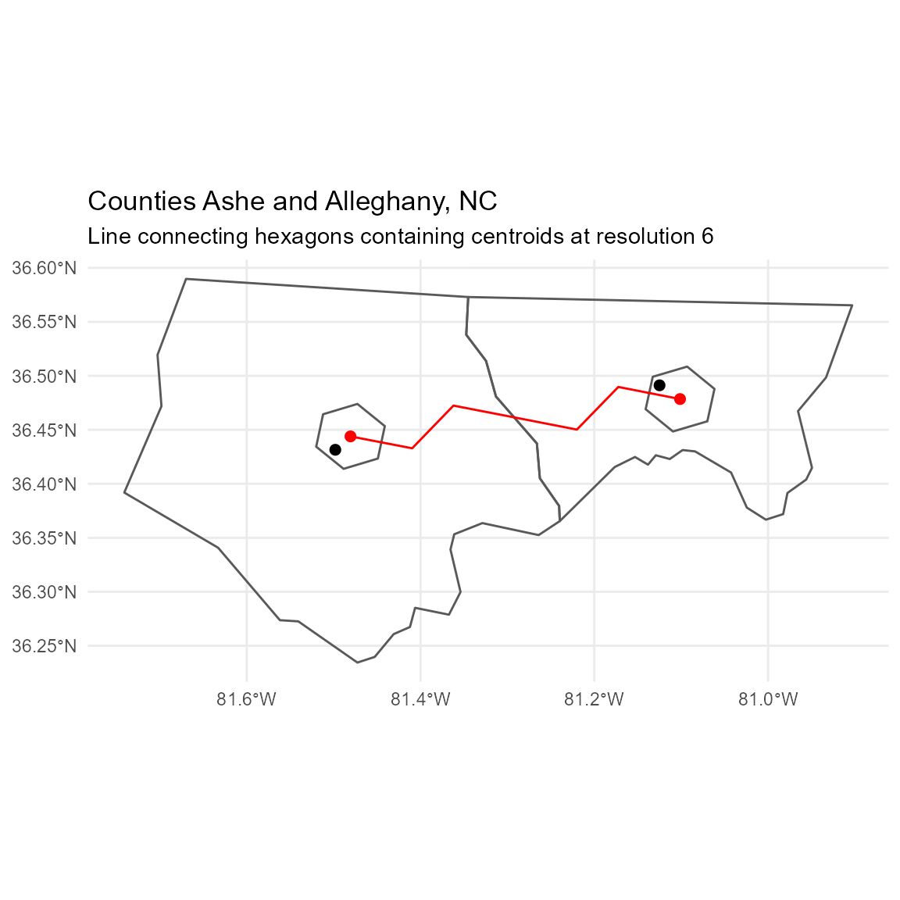
Info utilities
A set of general information utilities give information about the characteristics of the hexagons at each resolution. This includes average area, average edge length, average distance between hexagon centers, and the total number of addresses. This data is stored locally but can also be calculated from source.
res_area(6, 'km2')
#> [1] 36.12905
res_length(6, 'km')
#> [1] 3.229483
res_cendist(6, 'km')
#> [1] 5.593628
res_count(6)
#> [1] 14117882
data("h3_info_table")
str(h3_info_table)
#> 'data.frame': 16 obs. of 8 variables:
#> $ h3_resolution : int 0 1 2 3 4 5 6 7 8 9 ...
#> $ avg_area_sqm : num 4.25e+12 6.07e+11 8.67e+10 1.24e+10 1.77e+09 ...
#> $ avg_area_sqkm : num 4250547 607221 86746 12392 1770 ...
#> $ avg_edge_m : num 1107713 418676 158245 59811 22606 ...
#> $ avg_edge_km : num 1107.7 418.7 158.2 59.8 22.6 ...
#> $ avg_cendist_m : num 1918614 725168 274088 103595 39155 ...
#> $ avg_cendist_km : num 1918.6 725.2 274.1 103.6 39.2 ...
#> $ total_unique_indexes: num 122 842 5882 41162 288122 ...The exact area of particular cells and the length of edges can also be calculated:
cell_area(h3_address = '8abe8d12acaffff', 'km2')
#> [1] 0.0177539
edge_length(h3_address = '166be8d12fffffff', 'km')
#> [1] 4.037687
# reset local options
options(local_options)